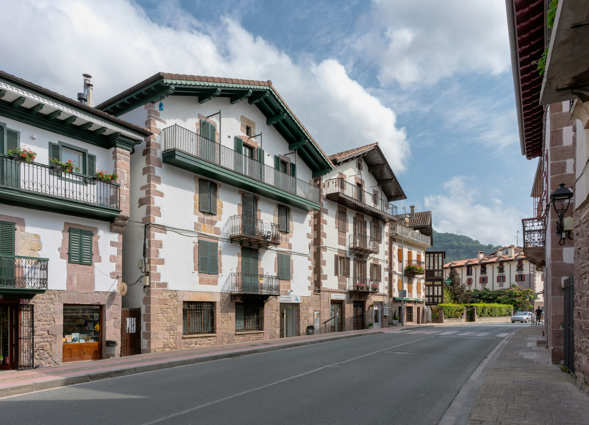

Bienvenido a Navarra Desktop
Navarra Desktop es un sitio web que recopila los principales recursos turísticos de la Comunidad Foral de Navarra: su gastronomía, sus rutas más emblemáticas, la meteorología en tiempo real de su capital y una central de reservas para que puedas planificar tu visita. Explora el menú superior para acceder a cada una de las secciones.
Imágenes destacadas de Navarra

Noticias recientes sobre Navarra
Cargando noticias...